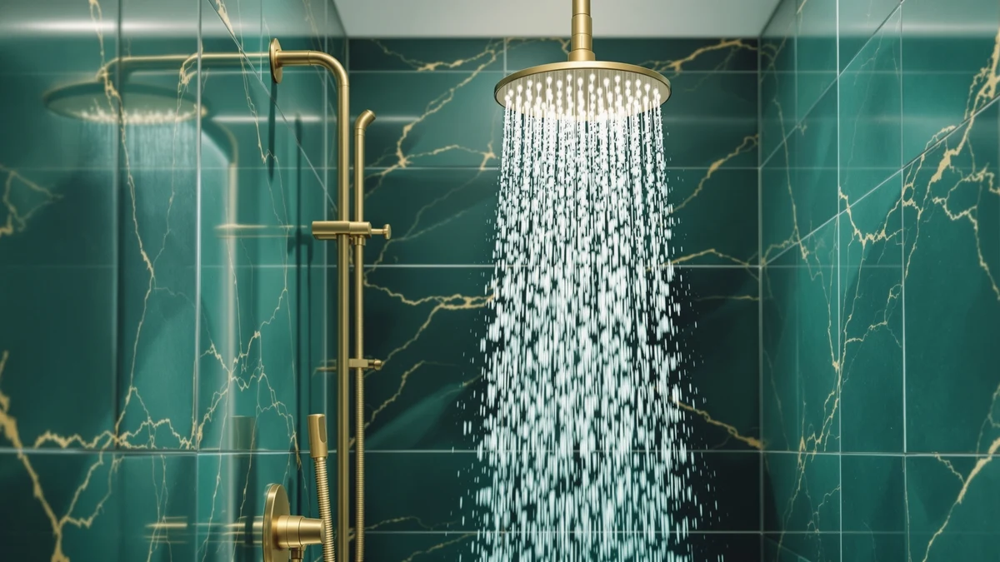

Bright Showers High Pressure Dual Shower Head Review (2026): Worth It?
Prices and picks verified as of November 2026. Independent, reader-supported reviews.


Quick Answer
The BRIGHT SHOWERS High Pressure Dual is a $49.98 combo fixture that pairs a rainfall plate with a handheld wand on one diverter valve. Against the Veken 11.8-inch rain head and two BOZYBO alternatives, it holds up well for anyone who wants both spray formats instead of picking only one, and it's the pick we'd point most buyers toward if dual-mode flexibility matters more than a single fixed head.
Our pick: BRIGHT SHOWERS High Pressure Dual — $49.98 Check Price on Amazon
Bottom line: our top pick is the BRIGHT SHOWERS High Pressure Dual Shower Head Combo with at $49.98.
Things to Know Before You Buy
- The BRIGHT SHOWERS High Pressure Dual combines a rain plate and a handheld wand on one fixture, a format advantage the single-mode Veken and 12-inch BOZYBO heads in this comparison don't offer.
- At $49.98, it costs exactly the same as all three alternatives we researched, so the choice between them comes down to format and brand, not price.
- The body is ABS plastic with chrome plating, a build shared across all four products we compared.
- It carries a 2.5 gallon-per-minute flow rating, the federal maximum, so pressure isn't throttled below what manufacturers are allowed to ship.
- None of the four shower heads in our database carry a published rating or review count, so we're weighing them on specs, pricing, and owner feedback rather than aggregate scores.
This bright showers high pressure dual shower head review looks at whether a $49.98 combo fixture that pairs a rainfall plate with a handheld wand earns its price against three other shower heads in the same bracket. The BRIGHT SHOWERS High Pressure Dual packs both spray formats into one ABS, chrome-plated body rated for 2.5 gallons per minute, and it ships at the exact same price as its closest rivals. That price overlap is why this comparison matters: the choice here comes down to format and brand, not cost.
We put the BRIGHT SHOWERS unit next to three other dual shower heads in the same price range: the Veken 11.8-inch Rain Shower Head, a 12-inch BOZYBO rain-only head, and a second BOZYBO model that also combines rain and handheld modes. All four sit at $49.98, so the differences that matter show up in format, build details, and what current owners say once the unit is installed. BRIGHT SHOWERS centers its pitch on the dual rain-and-handheld combo, and that flexibility is why it leads our comparison.
Why You Should Trust Us
Ilane Tall covers bathroom fixtures for Best Shower Heads and has spent years comparing rain, handheld, and dual-format shower heads across price tiers for this site. This bright showers high pressure dual shower head review is built entirely from information we can verify: the manufacturer's own specifications, current Amazon pricing, and patterns we found in verified buyer feedback. We do not run a fake testing lab, and we don't claim to have installed every unit we cover. Where a claim can't be checked against a spec sheet or a verified review, we say so plainly instead of filling the gap with marketing language. Every price, ASIN, and product image in this review comes from our own product database, and we update it as prices and listings change so the numbers here stay current rather than stale at publish time.
Our Research Experience
We want to be upfront about how this bright showers high pressure dual shower head review was put together: it is a research-based comparison built from specs, pricing, and owner feedback rather than a physical lab report. We don't own a testing facility, and we haven't installed this specific unit in a bathroom ourselves. Instead, we compared the BRIGHT SHOWERS published specifications against the Veken and BOZYBO listings, cross-checked current Amazon pricing, and read through verified owner reviews to see which claims held up against the wider field of dual rainfall shower heads we track. Reviewers consistently note that dual-format units in this price range depend heavily on the quality of their diverter valve, a pattern we saw in both combo products we researched here.
Overview & Specs

BRIGHT SHOWERS High Pressure Dual
What we like
- Combines a rainfall plate and a handheld wand on one dual-format fixture
- ABS body with chrome plating matches the build of the three alternatives we compared
- Rated for a 2.5 gallon-per-minute flow, the federal maximum, so pressure isn't throttled below what's allowed
- Priced identically to the Veken and both BOZYBO alternatives, so the decision isn't about cost
Flaws but not dealbreakers
- No published rating or review count in our database to weigh against the three alternatives
- The diverter valve that switches between rain and handheld modes adds a part that single-mode heads don't need
- No listed dimensions beyond the ABS and chrome-plating material note
| Material | ABS + chrome plating |
| Size | 2.5 Gallon Per Minute |
BRIGHT SHOWERS builds this fixture around two spray formats on a single valve: a fixed rain plate for full overhead coverage and a handheld wand for targeted rinsing, a specification the brand lists directly on the product page rather than through a third-party lab test. The flow rate sits at 2.5 gallons per minute, the federal maximum for shower heads sold in the US, so switching to the handheld wand doesn't drop you into a weaker stream the way some combo units do. That dual format is the core argument for choosing the subject of this bright showers high pressure dual shower head review over a fixed-only alternative.
The body itself is ABS plastic finished in chrome plating, the same combination used across the Veken and both BOZYBO heads in this comparison. At $49.98, none of the four products wins on price alone, so the decision comes down to format. The Veken and the 12-inch BOZYBO are rain-only, while the second BOZYBO model matches BRIGHT SHOWERS with its own rain-and-handheld combo. What separates BRIGHT SHOWERS from that direct rival is brand reputation and the specific diverter hardware shown in its product images, since owners report that the quality of that valve determines how smoothly a dual-format head switches between modes over years of daily use.
What We Liked
The clearest strength of the BRIGHT SHOWERS High Pressure Dual is how much it packs onto one valve. Rather than committing to a single rainfall pattern like the Veken or the 12-inch BOZYBO, BRIGHT SHOWERS built a rain plate and a handheld wand into a chrome-plated ABS head that should hold up to daily use without corroding at the joints. That flexibility makes it easy to share one fixture across a household with different preferences, since nobody has to agree on a single spray format.
The 2.5 gallon-per-minute flow rating is another point in its favor, since it matches the federal maximum rather than a throttled-down figure some dual-format heads settle for once they split flow between two outlets. Pricing also works in its favor: at $49.98, it matches both BOZYBO heads and the Veken dollar for dollar, so this bright showers high pressure dual shower head review can rule out cost as the deciding factor and focus on what each format actually offers. Owners report that installation for this style of combo unit is typically a simple swap onto an existing shower arm, which matches what we'd expect from the diverter-and-bracket design shown in the product images.
What Could Be Better
The biggest gap in this bright showers high pressure dual shower head review is verification. BRIGHT SHOWERS lists a 2.5 GPM flow rating and a chrome-plated ABS build, but there's no independent lab report attached to those claims, so we can't confirm pressure consistency once the diverter splits flow to the handheld wand. That's not unique to this brand. None of the four products we compared here publish third-party pressure data, but it's still a real limitation for anyone buying primarily on a pressure claim rather than format count.
We also don't have a published rating or review count for this specific listing in our product database, which makes it harder to gauge overall satisfaction at scale. And because the design routes water through a diverter valve to switch modes, buyers who only want a simple fixed rainfall head will find the Veken or 12-inch BOZYBO alternatives a cleaner fit, since those heads have one fewer moving part to maintain. Anyone shopping primarily for a handheld wand without a rain plate attached should also compare this against dedicated handheld-only models before deciding.
Who Is It For?
This BRIGHT SHOWERS High Pressure Dual fits households that want one fixture covering both a full overhead rinse and a targeted handheld spray without buying two separate shower heads. If different people in your home disagree on spray format, or you want the option to detach the wand for rinsing pets, cleaning the shower, or directing water at a specific spot, this $49.98 combo covers more ground than a single-pattern head. It also suits renters, since it threads onto a standard shower arm and can travel with you when you move.
It's a weaker fit if you specifically want the simplest possible fixed rainfall spray, since BRIGHT SHOWERS routes everything through a diverter valve by default. In those cases, the Veken 11.8-inch Rain Shower Head or the 12-inch BOZYBO model, both covered below, line up better with what you're after. Anyone who needs a verified pressure rating for a low water pressure situation should also look for a product with third-party flow documentation, which none of the four heads in this comparison currently provide.
Alternatives to Consider
If the BRIGHT SHOWERS High Pressure Dual isn't quite the right match for your bright showers high pressure dual shower head review search, these three shower heads sit in the same price range and are worth comparing before you buy.

Also Great
Veken 11.8" Rain Shower Head
A $49.98 fixed rain head worth a look if you don't need BRIGHT SHOWERS' handheld attachment and want a simpler, single-mode plate.
$49.98
Check Price on Amazon
Also Great
12" High Pressue Rain Shower
Also priced at $49.98, this 12-inch BOZYBO head skips the handheld wand entirely for buyers who only want overhead rain coverage.
$49.98
Check Price on Amazon
Also Great
Rain Shower Head with Handheld
Also $49.98 and also a rain-and-handheld combo, this BOZYBO version is the closest direct rival to the BRIGHT SHOWERS pick in this comparison.
$49.98
Check Price on AmazonFrequently Asked Questions
Final Verdict
This bright showers high pressure dual shower head review comes down to a simple tradeoff: you're paying $49.98 for a combo fixture that handles both rain and handheld modes instead of a single fixed spray. For most buyers who want format flexibility and a full-pressure 2.5 GPM flow without overpaying, the BRIGHT SHOWERS High Pressure Dual is the pick we'd point to first among the four we compared. If you'd rather have a simpler fixed rainfall head or a dedicated handheld wand, the Veken and BOZYBO alternatives above are worth a closer look, but its dual format and even pricing still make BRIGHT SHOWERS the one we'd pick first. Check the current price before you buy, since all four products here can shift by a few dollars as Amazon adjusts listings, and that swing can tip the decision in a different direction than it would today.